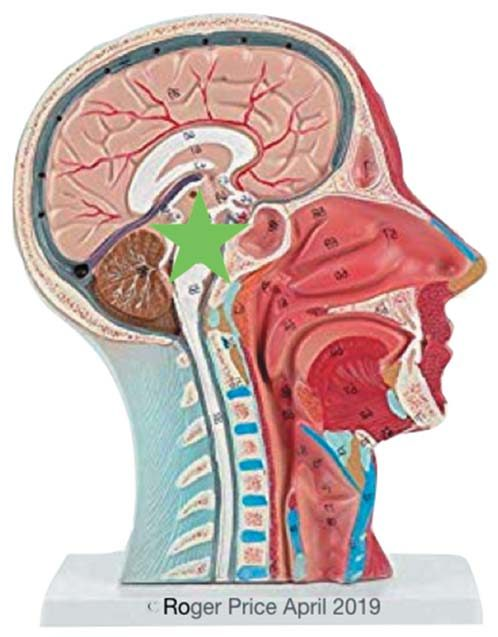
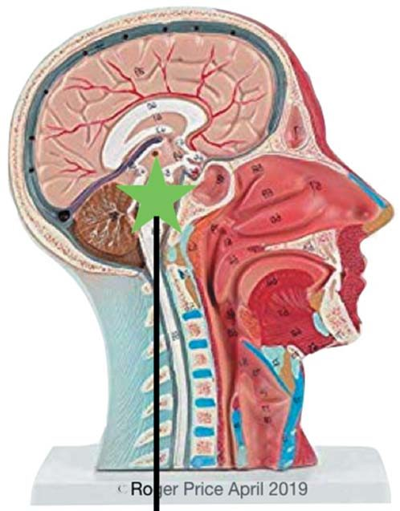
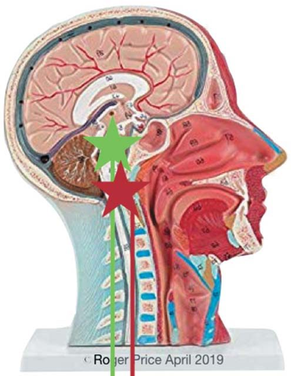
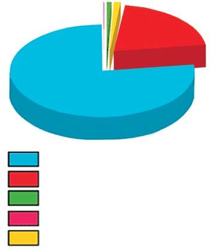
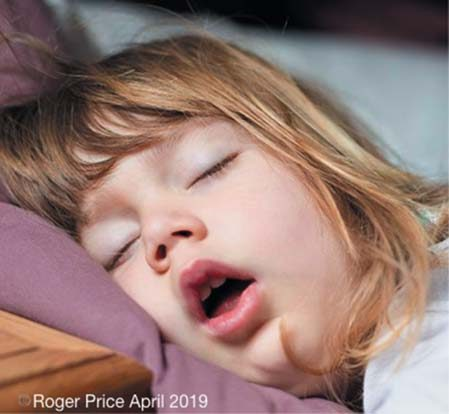
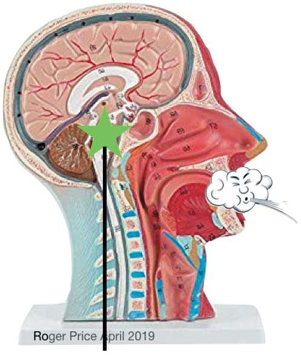
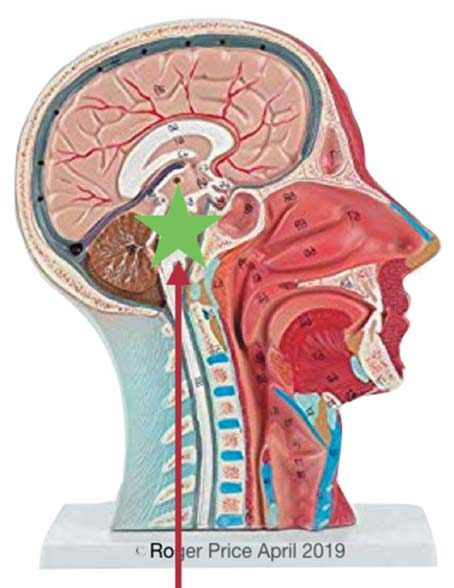

Практичні курси · журнал «ДентАрт» 2020 №1
Ротове дихання, аномалії прикусу і відновлення носового дихання
Mouth-Breathing, Malocclusion and the Restoration of Nasal Breathing
Вступ
Чим викликається ротове дихання, і що з цим можна зробити? Відповідь на це питання лежить в основах фізіології, які ми всі вивчали на початку нашого лікарського навчання. У той час, коли ми вивчали їх, ми не могли побачити їх загального значення, оскільки нам ще треба було вивчити весь спектр анатомії і фізіології для розуміння, як усе це взаємопов'язано. На той час, коли це сталося, ми забули їх більшу частину. Таким чином, не повинно дивувати те, що подальша інформація викличе відгук і, ймовірно, звичний коментар: «Але я ж знав це!»
Обговорення
Перш ніж обговорювати, що таке функціональне, а не дисфункціональне дихання, потрібно зрозуміти механізм дихання у всій його складності. Функціональне дихання починається, коли рівень вуглекислого газу (CO2) в артеріях (pCO2) досягає 40 мм рт. ст. і стимулює мозкову реакцію біля основи мозку. Це, у свою чергу, посилає сигнал на діафрагму, змушуючи її скорочуватися і розслаблятися, і таким чином підтримується дихальний цикл. Так що ж не так? (рис. 1)
Існують норми для артеріального тиску, пульсу, температури, хімічного складу крові і так далі, але немає такого поняття, як нормальне дихання. Дихання має бути відповідним нашому заняттю в той чи інший час! Воно повинно бути в порядку, коли бігаєш футбольним полем, і, звичайно, буде не в порядку, коли сидиш на дивані, дивишся футбольний матч, тримаючи кухоль пива в руці і безліч жирних, солоних закусок під рукою. Тому за відсутності нормального дихання найліпше, на що ми можемо сподіватися, — це визначення функціонального дихання у стані спокою (рис. 2).
Дихання безпосередньо пов'язане з активністю, харчуванням, рівнем стресу та іншими зовнішніми факторами. Хімічна вісь вимагає постійного контролю і миттєво реагує на будь-який дисбаланс рН. Проте існує визначення функціонального дихання у стані спокою, а саме:
- Вдихання і видихання через ніс
- Кероване діафрагмою, а не грудьми
- 8-12 вдихів за хвилину
- Хвилинний обсяг 5-6 літрів
- Тихе
У цих умовах оптимальний альвеолярний тиск CO2 буде близько до 40 мм рт. ст.
Починаючи з часу навчання в 1960-і роки фармакології, а потім — багатьом іншим «-ологіям» і «-опатіям», рідко доводилося стикатися зі стоматологом чи лікарем іншої спеціальності, який би, подивившись на пацієнта, підрахував кількість його або її вдихів і видихів за хвилину і сказав, що його або її дихання — за двох-трьох осіб. Медичні працівники, безумовно, досить часто коментують переїдання чи надмірне вживання алкоголю, але на дихання навіть не звертають уваги.
Усе, що відбувається з людським тілом, система якого прагне чинити опір або щось відкидає, є, по суті, реакцією на стрес. Ця реакція на стрес, або міні-переліт, або боротьба, викликає викид адреналіну з надниркових залоз, внаслідок чого частота нашого дихання підвищується. Це стосується того, що ми вживаємо всередину, з якими стресами ми стикаємося фактично, а також емоційно або за допомогою чуттєвого сприйняття, і які фізичні навантаження виникають у тілі через погану поставу та інші анатомічні порушення.
Постійні сигнали на збільшення частоти дихання або гіпервентиляції змушують хеморецептори в стовбурі головного мозку скидатися до того, що нині вважається «новим нормальним», і внаслідок цього стандартна частота дихання зростає з восьми-десяти вдихів за хвилину до 18-30 (рис. 3).
- Глибші і швидші дихальні рухи, які зменшують кількість CO2, що зберігається в легенях.
- Схильність дихати ротом в очікуванні загрози або втечі.
- Зміни рівня згортання крові, викиду ендорфіну, відтоку крові від життєво важливих органів до м'язів «польоту або боротьби», і все тіло готується до дії.
- Ця дія зазвичай ніколи не відбувається, бо небезпеки сприймаються раніше, ніж настають у реальності, і потім тіло повертається до свого попереднього стану. Якщо це постійне явище, то з'являються відповідні симптоми.
Однією з основних функцій дихання є підтримання pH артеріальної крові на оптимальній хімічній осі, яка коливається від 7,35 до 7,45. Це дуже важлива функція, бо вона контролює транспортування і виділення кисню по всьому організму. Коли хеморецептори в стовбурі мозку виявляють дисбаланс у хімічній осі, дихання регулюється автоматично для відновлення оптимальної функції. Це може збільшити або зменшити частоту дихання, глибину, об'єм, механіку, динаміку і моделі поведінки.
Оскільки ніс не призначений для того, щоб впоруватися з таким об'ємом повітря, ми підключаємо ротове дихання, і постійне зниження рівня CO2 через ротове дихання береже цю проблему назавжди (рис. 4).




- У тих, хто дихає ротом, завжди низько розташований язик, залишаючи верхню щелепу без підтримки на стадії росту.
- Відсутність урівноваження сил щічних м'язів, спрямованих всередину, призводить до звуження верхньої щелепи і формування високого піднебіння, до назального просування і сприяє скупченості зубів.
- Хеморецептори перебувають у дисфункціональному стані, сприяючи надмірному диханню.
- Спазм гладеньких м'язів може викликати шлунковий рефлюкс, в результаті чого шлункова кислота потрапляє в ротову порожнину.
- Порушена біохімія може поставити під загрозу ріст і розвиток.
- Інфекції верхніх дихальних шляхів, таких як повітряні пазухи, мигдалики та аденоїди, у поєднанні із запаленням і потовщенням слизової оболонки носоглотки і ротової порожнини можуть сприяти в результаті неправильного дихання синдрому опору верхніх дихальних шляхів (UARS)*.
- Оскільки дисфункціональні моделі поведінки змінюють лужність крові, з гемоглобіну в клітини виділяється менше кисню, що призводить до загибелі клітин — часто це проявляється як екзема.
* UARS (Upper Airway Resistance Syndrome) — синдром підвищеної резистентності верхніх дихальних шляхів.
Повітря містить дуже мало CO2, як видно на рис. 5, тому ми повинні виробляти свій власний двоокис вуглецю всередині тіла, щоб вийшла необхідна кількість. Двоокис вуглецю створюється головним чином як побічний продукт хімічних реакцій, що відбуваються під час фізичних вправ і травлення.
- Це абсолютний міф, що вуглекислий газ є токсичним викидним газом і має видихатися великими дихальними рухами, щоб витіснити його з організму.
- Для насичення крові гемоглобіном потрібно 5% кисню, який повинен бути присутнім у легенях. Повітря містить 21% кисню — у понад 4 рази більше, ніж потреба організму в ньому.
- У нормальних умовах організм ніколи не страждає від нестачі кисню; чого не вистачає, так це CO2, який поставляє пов'язаний кисень в мозок та інші клітини.
У результаті виникають численні проблеми зі здоров'ям, в основному через неконтрольований спазм систем гладеньких м'язів по всьому тілу, які залежать від присутності 40 мм рт. ст. pCO2 і приблизно 6,5% вмісту CO2 в легенях для підтримки стабільності. Крім зубних і ортодонтичних проблем, через дисфункціональне дихання виникає безліч інших проблем. Дві з них, які мають найбільший вплив на стоматологічну і ортодонтичну професії, — це хропіння та апное уві сні.
Хропіння
Хропіння — це, по суті, рух занадто великої кількості повітря над нещільною тканиною в задній частині горла, що викликає його деренчання. Супроводжуване зазвичай диханням з відкритим ротом, воно зберігає втрату CO2 і підтримує дисфункціональний характер дихання. Часто навчання пацієнта зменшувати частоту дихання і спати із закритим ротом практично усуває проблему.
Апное уві сні трохи відрізняється тим, що в багатьох випадках воно викликане порушенням рН крові через зниження рівня CO2 (рис. 6). Кров стає занадто лужною, а це змушує мозок сприймати, що клітини організму перебувають під загрозою смерті (що і є насправді). Відповіддю мозку є пригнічення дихання на час, достатній для підвищення рівня CO2, для виробництва більшої кількості вуглекислоти, яка буферизує кров і усуває небезпеку для клітин. Як тільки цього буде досягнуто, знову надходить сигнал дихати. Однак у випадку апное уві сні подальше дихання — це велике зітхання, що знову знижує рівень CO2 до небезпечного рівня. Ось чому апное уві сні характеризується циклом «пауза — задуха», який може відбуватися до 20-50 разів на годину. У більшості випадків це можна контролювати, відновлюючи рівень CO2 до нормального, забезпечуючи підтримку цілісності pH і усуваючи тим самим необхідність припинення дихання.
Традиційне медичне мислення гласить, що центральне апное уві сні — це нездатність сигналу дихати, що генерується мозком, досягати діафрагми. Численні клінічні випробування у великих лікарнях спростовують цю думку і доводять, що саме падіння альвеолярного CO2 змушує діафрагму зупинятися до тих пір, доки CO2 не підніметься до рівня, коли кисень знову почне виділятися з крові в мозок. Передусім це пов'язано з падінням CO2 в результаті хропіння і дихання через рот під час сну. Як тільки дихання відновиться, дисфункціональна модель поведінки повторить цей процес, і таким чином створюється цикл.



- хірургічний
- ортодонтичний
- ортопедичний
Усе це веде за собою чотири кроки:
- Виявлення причин дисфункціональної дихальної звички.
- З'ясування та усунення цих перешкод для оптимального функціонування дихання.
- Забезпечення усунення будь-якої фізичної перешкоди, щоб уникнути рецидиву.
- Реабілітація для відновлення оптимальної функції.
Як тільки система нормалізується, CO2 повертається до збалансованої функції і організм відновлюється.
Нормалізація носового дихання
Доброю новиною є те, що можна змінити цю ситуацію і відновити функціональне дихання. Це вимагає кількох кроків, які починаються з визначення причини проблеми. Якщо це не зроблено і звичка не змінена, реальним наслідком буде рецидив. Також слід враховувати механіку і динаміку дихання, щоб можна було відновити оптимальний рівень утримуваного CO2. У той момент, коли це відбувається, медулярна реакція розпізнає, що залишкові рівні CO2 піднялися, і починає запускати реакцію до відповідного рівня (рис. 7).
Висновки
Стоматологи й лікарі інших спеціальностей далеко не завжди при діагностиці та лікуванні звертають увагу на дихання пацієнта, хоча і знають про негативний вплив ротового дихання на розвиток верхньої щелепи. У тих, хто дихає ротом, завжди низько розташований язик, і відсутність урівноважуючих сил щічних м'язів, спрямованих всередину, призводить до звуження верхньої щелепи і формування високого піднебіння, назального просування і скупченості зубів.
Дуже важливо розуміти механізми функціонального і дисфункціонального дихання у всій їх складності, а також позбутися міфів типу того, що вуглекислий газ є токсичним викидним газом і повинен видихатися великими дихальними рухами. Обов'язок стоматолога — визначити причину дисфункціонального дихання, допомогти пацієнтові змінити звички, щоб у нього при диханні відновлювався належний рівень утримуваного CO2.